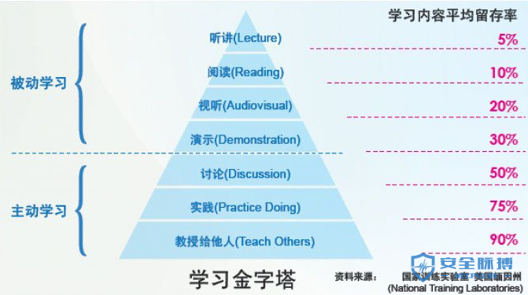

网络安全学习方法论之体系的重要性--转载
网络安全学习方法论之体系的重要性–转载
前者的话：
如果你分享的内容过于真实，你就没有发表机会，你要完全假了呢，又没有读者去看，你可以在这个通道里，真一会儿假一会儿地往前走，最重要的还是要往前走。—-Micropoor
古人把一个职业的发展分为7个阶段，即：
- 奴：自愿和靠人监督的人。
- 徒：能力不足，肯自愿学习的人。
- 工：老老实实，按规矩做事的人。
- 匠：精通一门技艺或手艺的人。
- 师：掌握了规律，又能将其传授给他人的人。
- 家：有固定的信念，让别人生活的更好的人。
- 圣：精通事理，通达万物的人。
那么网络安全学习也将会有阶段划分，我把它划分为10个阶段：
1：问
2：学
3：动
4：记
5：体系
6：问
7：分享
8：带队
9：受业
10：育才
什么是体系？
体系的本质是知识点的灵活串联与应用
建立体系的过程？
1：整理知识碎片化
2：建立知识框架
3：形成知识体系
爱德加·戴尔提出了一套学习模型：模型主要分别为被动学习与主动学习的一个过程
同时提出，学习效果在30%以下的几种传统方式，都是个人学习或被动学习；而学习效果在50%以上的，都是团队学习、主动学习和参与式学习。
“输出”是最好的学习方式，“输出”的本质是体系重新结构化

本文作者：Micropoor
本文为安全脉搏专栏作者发布，转载于：https://www.secpulse.com/archives/109182.html
本博客所有文章除特别声明外，均采用 CC BY-NC-SA 4.0 许可协议。转载请注明来自 HZ-Blog！